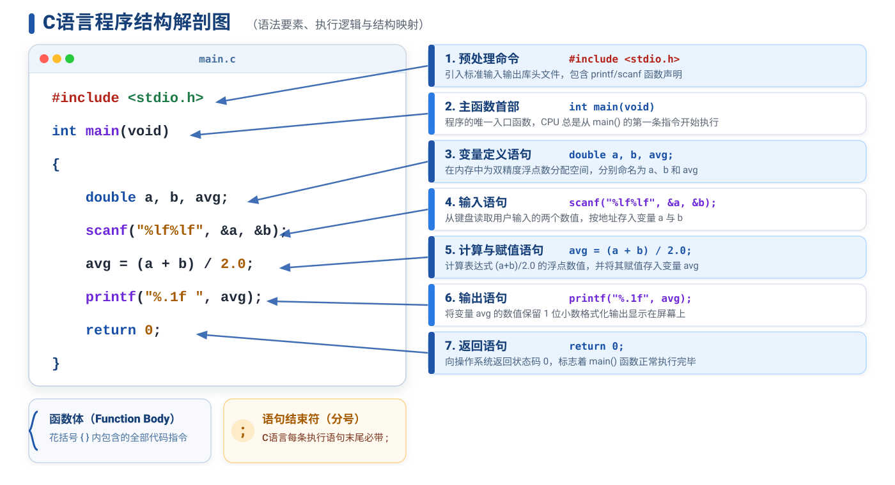

程序设计基础 · 第2次课 · 第1课时
从成绩分析问题理解变量、类型、输入输出与浮点运算
设计一个班级成绩分析程序，并在三课时中逐步扩展。
主要变量为
a、b、s、sum、avg，减少英文词汇负担。
原始成绩常用整数，平均分常用浮点数，适合解释 int 与
double。
成绩有合法范围和等级区间，适合解释合理区间设计与边界测试。
scanf / printf 的基本用法
#include <stdio.h>
int main(void)
{
printf("Enter two scores: ");
return 0;
}
#include引入标准输入输出相关信息。
main()C程序开始执行的位置。
printf()把文字显示到屏幕上。

printf("score = 59\n");
数据直接硬编码在程序中，数值固定无法重复修改使用。
int a = 59;
printf("score = %d\n", a);
开辟一块内存空间命名为 a，把数据存入其中。
=）是把右侧的数据放入左侧的变量中。
int a = 59, b = 60;
int avg = (a + b) / 2;
printf("avg = %d\n", avg);
思考与讨论：119 / 2 的输出是多少？小数部分
.5 被直接丢弃（整数截断）。
int a = 59, b = 60;
double avg = (a + b) / 2.0;
printf("avg = %.1f\n", avg);
解决方案：使用 2.0 提升表达式类型为浮点数，正确输出
59.5。
2.0），整个表达式就会按浮点运算保留小数。
int 与 double？int 整数类型int a = 59;double 双精度浮点型double avg = 59.5;printf("%.1f", avg);变量定义 = 告知编译器内存大小 + 赋予名字 + 制定解释规则
scanf()
int a = 59, b = 60;
每次换成绩都要修改代码重新编译，缺乏通用性。
int a, b;
scanf("%d%d", &a, &b);
程序运行时等待用户输入数据，通用性强！
printf("...", a); 把变量
a 的值拿出来显示。scanf("...", &a); 找到变量
a
的地址（&a），把键盘读入的数据放进去。
#include <stdio.h>
int main(void)
{
int a, b; // 1. 定义变量存储整数成绩
double avg; // 2. 定义变量存储浮点平均分
scanf("%d%d", &a, &b); // 3. 读入用户输入的成绩
avg = (a + b) / 2.0; // 4. 计算平均分（浮点运算）
printf("average = %.1f\n", avg); // 5. 格式化输出结果
return 0;
}
看懂这段程序：从“固定数据”到“输入-处理-输出”完整数据流！
认知陷阱：以为把变量定义为 double avg，计算就会自动按小数算。
double avg;
avg = (a + b) / 2; // 结果是 59.0，而不是 59.5！
(59 + 60) / 2 → 119 / 2
两个 int 相除，在赋值前就已经被截断为整数 59！
avg = 59 → 转换为 double
将已截断的整数 59 存入 double 变量，变为
59.0。
(59 + 60) / 2int ÷ int → int
直接丢弃小数部分（截断）。
(59 + 60) / 2.0int ÷ double → double ÷ double → double
低精度自动提升为高精度，保留小数。看常量 2.0！
决定计算精度的三要素：变量类型、常量形式、表达式整体类型
计算精度由表达式内部的数据类型决定，而不是由接收结果的变量决定。
只要涉及平均值、比例、百分比等场景，运算符两侧必须至少有一个浮点数。
不要凭直觉想象代码运行！必须用类似
59, 60 这种能触发奇数除法的边界数据真实验证。
| 写法 | 原理特征 | 建议等级 |
|---|---|---|
avg = (a + b) / 2; |
整数截断，丢小数 | 避坑：不推荐 |
avg = (a + b) / 2.0; |
常量触发自动提升 | 推荐：直观清晰 |
avg = (double)(a + b) / 2; |
强制类型转换 | 进阶：显式转换 |
a=59, b=60 时的计算过程：avg = (a + b) / 2; 和 avg = (a + b) / 2.0;在纸上画出“右值计算 → 类型提升 → 左值赋值”的三个步骤。
核对 AI 的拆解是否符合“右值先算”原理，防范 AI 产生生成幻觉。
main 组织执行。scanf 取地址存入，printf
格式化输出。